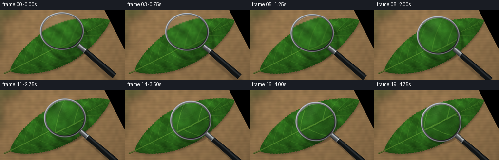
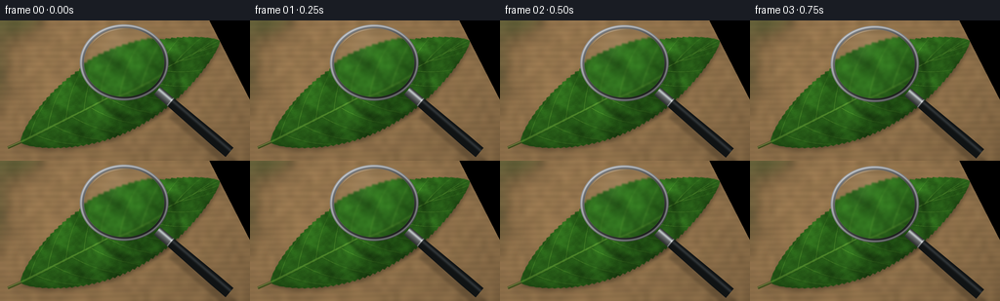
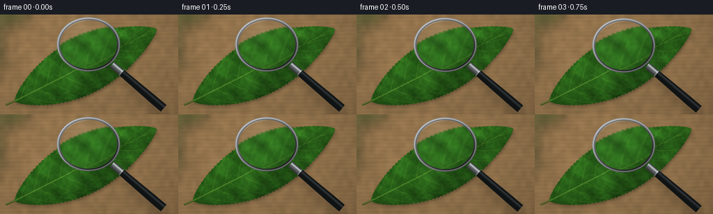
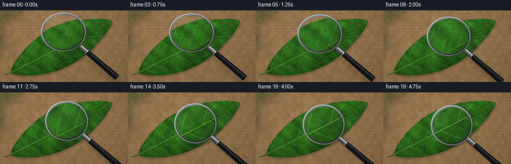

CODING AGENTS AS PIXEL WORLD MODELS
traex/GPT-6.1-Sol · phygen_068
点击播放 · 原生 RGB 像素
逐轮保存的候选
回放视频、检查图与代码变化。
每份候选均可单独播放。实际图片检查记录在下方工具轨迹中。
候选 01播放与检查图
点击播放 · 原生 RGB 像素


展开代码变化
--- 上一保存版本
+++ 本次保存版本
@@ -0,0 +1,211 @@
+from pathlib import Path
+import math
+import numpy as np
+from PIL import Image, ImageDraw, ImageFilter
+import artifact_io
+
+ROOT = Path(__file__).resolve().parent
+W,H,S = 256,144,4
+WW,HH = W*S,H*S
+rng = np.random.default_rng(861)
+yy,xx=np.mgrid[0:HH,0:WW].astype(np.float32)/S
+
+# Everything is drawn mathematically at four times the final resolution.
+def noise(w,h):
+ a=rng.random((h,w)).astype(np.float32)
+ return np.asarray(Image.fromarray(a,mode='F').resize((WW,HH),Image.Resampling.BICUBIC))-.5
+
+def blur_array(a,r):
+ return np.asarray(Image.fromarray(np.uint8(np.clip(a,0,255))).filter(ImageFilter.GaussianBlur(r*S))).astype(np.float32)
+
+def mix(a,b,mask):
+ return a*(1-mask[...,None])+b*mask[...,None]
+
+# Warm, softly lit tabletop, its grain subdued by shallow depth of field.
+woodnoise=noise(40,18)
+grain=np.sin(yy*1.15+2.1*noise(7,17)+xx*.014)+.4*np.sin(yy*4.2+xx*.006)
+light=1-.17*((xx-65)**2/(270**2)+(yy-24)**2/(190**2))
+bg=np.stack([151+9*grain+17*woodnoise,119+7*grain+13*woodnoise,79+5*grain+9*woodnoise],axis=-1)*light[...,None]
+bg=blur_array(bg,1.3)
+# Vague out-of-focus foliage in the far upper-left corner.
+bokeh=Image.new('RGBA',(WW,HH),(0,0,0,0)); bd=ImageDraw.Draw(bokeh)
+bd.ellipse((-42*S,-27*S,47*S,19*S),fill=(39,73,30,105))
+bd.ellipse((-25*S,6*S,8*S,96*S),fill=(42,73,34,95))
+bokeh=bokeh.filter(ImageFilter.GaussianBlur(8*S)); ba=np.asarray(bokeh).astype(np.float32)
+bg=mix(bg,ba[...,:3],ba[...,3]/255)
+
+# A broad pointed leaf, lying diagonally on the tabletop.
+bx,by=21.,125.
+angle=-.472
+ux,uy=math.cos(angle),math.sin(angle)
+vx,vy=-uy,ux
+u=(xx-bx)*ux+(yy-by)*uy
+v=(xx-bx)*vx+(yy-by)*vy
+L=229.
+t=np.clip(u/L,0,1)
+def width(p):
+ tt=np.clip(np.asarray(p)/L,0,1)
+ return 43.2*np.sin(np.pi*tt)**.73*(1-.13*tt)
+leafwidth=width(u)
+serrate=(.72*np.sin(u*1.15)+.28*np.sin(u*2.3))*(np.sin(np.pi*t)**.6)
+signed=leafwidth+serrate-np.abs(v)
+mask=np.clip(signed*S+.5,0,1)*((u>0)&(u<L))
+leafmask=Image.fromarray(np.uint8(mask*255))
+# Shallow contact shadow under the edge.
+shadow=Image.new('L',(WW,HH),0)
+shadow.paste(leafmask,(int(1.1*S),int(2.3*S)))
+shadow=np.asarray(shadow.filter(ImageFilter.GaussianBlur(1.9*S)))/255.
+bg*=1-.28*shadow[...,None]
+
+# Uneven chlorophyll and soft ridges between the major lateral veins.
+large=noise(14,8); med=noise(80,45); micro=noise(480,270)
+fold=np.cos((u-v*.40)*.30)*np.minimum(np.abs(v)/15,1)
+leaflight=.93 + .11*(-v/(leafwidth+3)) + .07*fold + .12*large +.03*med
+leaflight-=.13*(np.abs(v)/(leafwidth+1))**7
+leaf=np.stack([44+14*large+7*med,104+27*large+14*med,27+9*large+5*med],axis=-1)*leaflight[...,None]
+
+# Irregular polygonal surface cells, computed as a jittered Voronoi field.
+cell=1.65
+cu=u/cell; cv=v/cell
+ix=np.floor(cu).astype(int); iy=np.floor(cv).astype(int)
+d1=np.full_like(u,1e9); d2=d1.copy()
+for dy in (-1,0,1):
+ for dx in (-1,0,1):
+ ax=ix+dx; ay=iy+dy
+ jx=np.mod(np.sin(ax*127.1+ay*311.7+19.4)*43758.5453,1)
+ jy=np.mod(np.sin(ax*269.5+ay*183.3+21.8)*32871.1847,1)
+ dis=(cu-(ax+.2+.6*jx))**2+(cv-(ay+.2+.6*jy))**2
+ d2=np.minimum(d2,np.maximum(d1,dis)); d1=np.minimum(d1,dis)
+borders=np.exp(-((np.sqrt(d2)-np.sqrt(d1))/.075)**2)
+cellshine=np.exp(-d1*5)
+leaf+=(-2.4*borders+1.8*cellshine+2.1*micro)[...,None]*np.array([.7,1.2,.55])
+
+# Hierarchical vein geometry, with softly raised edges and subtle grooves.
+veins=Image.new('L',(WW,HH),0); vd=ImageDraw.Draw(veins)
+fine=Image.new('L',(WW,HH),0); fd=ImageDraw.Draw(fine)
+def pos(a,b): return ((bx+a*ux+b*vx)*S,(by+a*uy+b*vy)*S)
+def curve(a,b,c,n=40):
+ q=np.linspace(0,1,n)
+ return [((1-z)**2*a[0]+2*(1-z)*z*b[0]+z*z*c[0],(1-z)**2*a[1]+2*(1-z)*z*b[1]+z*z*c[1]) for z in q]
+def drawpath(draw,ps,thick,col):
+ draw.line([pos(a,b) for a,b in ps],fill=col,width=max(1,round(thick*S)),joint='curve')
+for side in (-1,1):
+ for n,u0 in enumerate(np.arange(14,207,20.8)):
+ u0+=side*3.1
+ end=min(u0+37,L-3)
+ ev=side*float(width(end))*.965
+ ps=curve((u0,0),(u0+13,ev*.56),(end,ev))
+ # Main lateral vein taper.
+ for j in range(len(ps)-1):
+ drawpath(vd,ps[j:j+2],.72*(1-j/len(ps))+.16,155 if n<8 else 137)
+ for frac in (.28,.48,.68,.82):
+ k=int(frac*(len(ps)-1)); aa,bb=ps[k]
+ for direction in (-1,1):
+ endu=min(aa+10+frac*7,L-2)
+ endv=bb+side*(direction*5.5+3.5)
+ lim=float(width(endu))*.96
+ endv=np.clip(endv,-lim,lim)
+ branch=curve((aa,bb),(aa+4,bb+side*direction*3),(endu,endv),15)
+ drawpath(fd,branch,.20,95)
+ for ff in (.45,.75):
+ a2,b2=branch[int(ff*(len(branch)-1))]
+ drawpath(fd,[(a2,b2),(a2+4,b2-side*2.3)],.12,47)
+# The midrib narrows gently towards the tip.
+for j in range(150):
+ a=L*j/150; b=L*(j+1)/150
+ drawpath(vd,[(a,.3*np.sin(a*.022)),(b,.3*np.sin(b*.022))],1.85*(1-a/L)+.28,220)
+vm=np.asarray(veins).astype(np.float32)/255
+fm=np.asarray(fine).astype(np.float32)/255
+# Slight lateral shadow and highlight make the veins read as actual relief.
+vs=Image.new('L',(WW,HH)); vs.paste(veins,(int(.35*S),int(.58*S)))
+vs=np.asarray(vs.filter(ImageFilter.GaussianBlur(.32*S)))/255
+leaf-=vs[...,None]*np.array([8,15,5])
+leaf+=vm[...,None]*np.array([47,52,22])
+leaf+=fm[...,None]*np.array([25,30,12])
+edge=np.exp(-(signed/.48)**2)*.20
+leaf+=edge[...,None]*np.array([28,31,9])
+bg=mix(bg,leaf,mask)
+# Tiny stem behind the leaf base.
+stem=Image.new('RGBA',(WW,HH)); sd=ImageDraw.Draw(stem)
+sd.line([pos(-14,-.9),pos(1,0)],fill=(62,79,28,255),width=3*S)
+sd.line([pos(-14,-1.3),pos(1,-.4)],fill=(118,129,66,230),width=S)
+st=np.asarray(stem).astype(np.float32); bg=mix(bg,st[...,:3],st[...,3]/255)
+source=np.clip(bg,0,255).astype(np.float32)
+base=blur_array(source,.13)
+
+def sample(array,x,y):
+ x=np.clip(x*S,0,WW-1.001); y=np.clip(y*S,0,HH-1.001)
+ x0=x.astype(int); y0=y.astype(int); fx=x-x0; fy=y-y0
+ return (array[y0,x0]*(1-fx)[...,None]*(1-fy)[...,None]+array[y0,x0+1]*fx[...,None]*(1-fy)[...,None]+array[y0+1,x0]*(1-fx)[...,None]*fy[...,None]+array[y0+1,x0+1]*fx[...,None]*fy[...,None])
+
+frames=[]
+for index in range(20):
+ p=index/19
+ ease=p*p*(3-2*p)
+ cx=127+10*ease; cy=43+23*ease
+ r=45.5-3.5*ease; sy=.86+.11*ease
+ dx=xx-cx; dy=(yy-cy)/sy
+ rr=np.sqrt(dx*dx+dy*dy); theta=np.arctan2(dy,dx)
+ # Moving cast shadow expresses the glass descending towards the leaf.
+ sh=Image.new('L',(WW,HH)); sdraw=ImageDraw.Draw(sh)
+ ox=11*(1-ease)+2; oy=17*(1-ease)+4
+ bounds=((cx-r+ox)*S,(cy-r*sy+oy)*S,(cx+r+ox)*S,(cy+r*sy+oy)*S)
+ sdraw.ellipse(bounds,outline=150,width=int(5.7*S))
+ direction=(.76,.65)
+ a=(cx+direction[0]*(r+2)+ox,cy+direction[1]*(r+2)+oy)
+ b=(cx+direction[0]*135+ox,cy+direction[1]*135+oy)
+ sdraw.line([(a[0]*S,a[1]*S),(b[0]*S,b[1]*S)],fill=150,width=12*S)
+ sh=np.asarray(sh.filter(ImageFilter.GaussianBlur(4.5*(1-ease)+1.25)))/255
+ out=base*(1-.32*sh[...,None])
+ # Handle: black lacquered grip, metal ferrule and rounded end.
+ along=dx*direction[0]+(yy-cy)*direction[1]
+ across=-dx*direction[1]+(yy-cy)*direction[0]
+ start=r-1; end=142
+ hwidth=5.1+1.15*np.clip((along-58)/65,0,1)
+ segment=(along>=start)&(along<=end)
+ hmask=np.clip((hwidth-np.abs(across))*S+.5,0,1)*segment
+ sheen=np.exp(-((across+2.2)/1.5)**2)
+ material=np.stack([17+31*sheen,20+33*sheen,21+35*sheen],axis=-1)
+ # Polished silver mounting neck.
+ neck=along<r+17
+ metal=70+115*sheen+25*np.cos(across*.54)
+ material=np.where(neck[...,None],np.stack([metal*.97,metal,metal*1.015],axis=-1),material)
+ # Narrow gleaming collar at the joint.
+ collar=np.exp(-((along-(r+17))/.65)**2)*segment
+ material+=collar[...,None]*90
+ out=mix(out,material,hmask)
+ # Convex optical image; small edge distortion and gradual focusing.
+ inner=r-4.4
+ normalized=np.clip(rr/inner,0,1)
+ magnification=1.22+1.43*ease
+ radial=1+.052*normalized**6
+ sx=cx+dx/magnification*radial
+ syy=cy+(yy-cy)/magnification*radial
+ optical=sample(source,sx,syy)
+ optical=blur_array(optical,.83*(1-ease)+.025)
+ optical=optical*np.array([1.01,1.022,1.025])+np.array([1.2,1.4,1.6])
+ # Very faint soft reflection from a window across the curved lens.
+ reflection=np.exp(-((dx+18+dy*.36)/12)**2-((dy+22)/20)**2)
+ optical+=reflection[...,None]*10
+ optical*=1-.075*normalized[...,None]**8
+ lm=np.clip((inner-rr)*S+.5,0,1)
+ out=mix(out,optical,lm)
+ # Thick silver bezel, with a dark inner seat and polished specular edges.
+ ringmask=np.clip((r-rr)*S+.5,0,1)*(1-lm)
+ depth=(rr-inner)/(r-inner)
+ directional=.53+.47*np.cos(theta+2.15)
+ ringtone=45+95*directional+77*np.exp(-((depth-.67)/.15)**2)
+ ringtone-=34*np.exp(-((depth-.18)/.10)**2)
+ ringtone+=38*np.exp(-((depth-.96)/.045)**2)
+ ring=np.stack([ringtone*.98,ringtone,ringtone*1.025],axis=-1)
+ out=mix(out,ring,ringmask)
+ # Curved glass glint just inside the rim, never obscuring the specimen.
+ arc=np.exp(-((rr-(inner-1.0))/.30)**2)*np.exp(-((theta+2.04)/.47)**4)
+ out=mix(out,np.full_like(out,240),arc*.57*lm)
+ # Camera-like vignette and subtle sensor grain.
+ vig=1-.055*((xx-128)/165)**2-.045*((yy-72)/115)**2
+ out*=vig[...,None]
+ im=Image.fromarray(np.uint8(np.clip(out,0,255))).resize((W,H),Image.Resampling.LANCZOS)
+ frames.append(np.asarray(im))
+artifact_io.save(np.stack(frames).astype(np.uint8),ROOT)
+print('Saved 20 RGB frames and player artifacts.')
候选 02播放与检查图
点击播放 · 原生 RGB 像素


展开代码变化
--- 上一保存版本
+++ 本次保存版本
@@ -13,7 +13,7 @@
# Everything is drawn mathematically at four times the final resolution.
def noise(w,h):
a=rng.random((h,w)).astype(np.float32)
- return np.asarray(Image.fromarray(a,mode='F').resize((WW,HH),Image.Resampling.BICUBIC))-.5
+ return np.asarray(Image.fromarray(a).resize((WW,HH),Image.Resampling.BICUBIC))-.5
def blur_array(a,r):
return np.asarray(Image.fromarray(np.uint8(np.clip(a,0,255))).filter(ImageFilter.GaussianBlur(r*S))).astype(np.float32)
@@ -45,9 +45,9 @@
t=np.clip(u/L,0,1)
def width(p):
tt=np.clip(np.asarray(p)/L,0,1)
- return 43.2*np.sin(np.pi*tt)**.73*(1-.13*tt)
+ return 43.2*np.maximum(np.sin(np.pi*tt),0)**.73*(1-.13*tt)
leafwidth=width(u)
-serrate=(.72*np.sin(u*1.15)+.28*np.sin(u*2.3))*(np.sin(np.pi*t)**.6)
+serrate=(.72*np.sin(u*1.15)+.28*np.sin(u*2.3))*(np.maximum(np.sin(np.pi*t),0)**.6)
signed=leafwidth+serrate-np.abs(v)
mask=np.clip(signed*S+.5,0,1)*((u>0)&(u<L))
leafmask=Image.fromarray(np.uint8(mask*255))
@@ -78,7 +78,7 @@
d2=np.minimum(d2,np.maximum(d1,dis)); d1=np.minimum(d1,dis)
borders=np.exp(-((np.sqrt(d2)-np.sqrt(d1))/.075)**2)
cellshine=np.exp(-d1*5)
-leaf+=(-2.4*borders+1.8*cellshine+2.1*micro)[...,None]*np.array([.7,1.2,.55])
+leaf+=(-5.4*borders+2.9*cellshine+2.5*micro)[...,None]*np.array([.7,1.2,.55])
# Hierarchical vein geometry, with softly raised edges and subtle grooves.
veins=Image.new('L',(WW,HH),0); vd=ImageDraw.Draw(veins)
@@ -106,10 +106,10 @@
lim=float(width(endu))*.96
endv=np.clip(endv,-lim,lim)
branch=curve((aa,bb),(aa+4,bb+side*direction*3),(endu,endv),15)
- drawpath(fd,branch,.20,95)
+ drawpath(fd,branch,.29,135)
for ff in (.45,.75):
a2,b2=branch[int(ff*(len(branch)-1))]
- drawpath(fd,[(a2,b2),(a2+4,b2-side*2.3)],.12,47)
+ drawpath(fd,[(a2,b2),(a2+4,b2-side*2.3)],.18,78)
# The midrib narrows gently towards the tip.
for j in range(150):
a=L*j/150; b=L*(j+1)/150
@@ -155,7 +155,7 @@
a=(cx+direction[0]*(r+2)+ox,cy+direction[1]*(r+2)+oy)
b=(cx+direction[0]*135+ox,cy+direction[1]*135+oy)
sdraw.line([(a[0]*S,a[1]*S),(b[0]*S,b[1]*S)],fill=150,width=12*S)
- sh=np.asarray(sh.filter(ImageFilter.GaussianBlur(4.5*(1-ease)+1.25)))/255
+ sh=np.asarray(sh.filter(ImageFilter.GaussianBlur((4.5*(1-ease)+1.25)*S)))/255
out=base*(1-.32*sh[...,None])
# Handle: black lacquered grip, metal ferrule and rounded end.
along=dx*direction[0]+(yy-cy)*direction[1]
可观测工具轨迹
实际执行的命令与返回图片。
命令 1exit 0
/bin/bash -lc 'ls -la && cat prompt.txt && cat GENERATION_RULES.md && cat task_spec.json'
命令 2exit 0
/bin/bash -lc "cat artifact_io.py && python - <<'PY'
import numpy, PIL
print('numpy', numpy.__version__, 'Pillow', PIL.__version__)
PY"命令 3exit 0
/bin/bash -lc "cat > generate.py <<'PY'
from pathlib import Path
import math
import numpy as np
from PIL import Image, ImageDraw, ImageFilter
import artifact_io
ROOT = Path(__file__).resolve().parent
W,H,S = 256,144,4
WW,HH = W*S,H*S
rng = np.random.default_rng(861)
yy,xx=np.mgrid[0:HH,0:WW].astype(np.float32)/S
# Everything is drawn mathematically at four times the final resolution.
def noise(w,h):
a=rng.random((h,w)).astype(np.float32)
return np.asarray(Image.fromarray(a,mode='F').resize((WW,HH),Image.Resampling.BICUBIC))-.5
def blur_array(a,r):
return np.asarray(Image.fromarray(np.uint8(np.clip(a,0,255))).filter(ImageFilter.GaussianBlur(r*S))).astype(np.float32)
def mix(a,b,mask):
return a*(1-mask[...,None])+b*mask[...,None]
# Warm, softly lit tabletop, its grain subdued by shallow depth of field.
woodnoise=noise(40,18)
grain=np.sin(yy*1.15+2.1*noise(7,17)+xx*.014)+.4*np.sin(yy*4.2+xx*.006)
light=1-.17*((xx-65)**2/(270**2)+(yy-24)**2/(190**2))
bg=np.stack([151+9*grain+17*woodnoise,119+7*grain+13*woodnoise,79+5*grain+9*woodnoise],axis=-1)*light[...,None]
bg=blur_array(bg,1.3)
# Vague out-of-focus foliage in the far upper-left corner.
bokeh=Image.new('RGBA',(WW,HH),(0,0,0,0)); bd=ImageDraw.Draw(bokeh)
bd.ellipse((-42*S,-27*S,47*S,19*S),fill=(39,73,30,105))
bd.ellipse((-25*S,6*S,8*S,96*S),fill=(42,73,34,95))
bokeh=bokeh.filter(ImageFilter.GaussianBlur(8*S)); ba=np.asarray(bokeh).astype(np.float32)
bg=mix(bg,ba[...,:3],ba[...,3]/255)
# A broad pointed leaf, lying diagonally on the tabletop.
bx,by=21.,125.
angle=-.472
ux,uy=math.cos(angle),math.sin(angle)
vx,vy=-uy,ux
u=(xx-bx)*ux+(yy-by)*uy
v=(xx-bx)*vx+(yy-by)*vy
L=229.
t=np.clip(u/L,0,1)
def width(p):
tt=np.clip(np.asarray(p)/L,0,1)
return 43.2*np.sin(np.pi*tt)**.73*(1-.13*tt)
leafwidth=width(u)
serrate=(.72*np.sin(u*1.15)+.28*np.sin(u*2.3))*(np.sin(np.pi*t)**.6)
signed=leafwidth+serrate-np.abs(v)
mask=np.clip(signed*S+.5,0,1)*((u>0)&(u<L))
leafmask=Image.fromarray(np.uint8(mask*255))
# Shallow contact shadow under the edge.
shadow=Image.new('L',(WW,HH),0)
shadow.paste(leafmask,(int(1.1*S),int(2.3*S)))
shadow=np.asarray(shadow.filter(ImageFilter.GaussianBlur(1.9*S)))/255.
bg*=1-.28*shadow[...,None]
# Uneven chlorophyll and soft ridges between the major lateral veins.
large=noise(14,8); med=noise(80,45); micro=noise(480,270)
fold=np.cos((u-v*.40)*.30)*np.minimum(np.abs(v)/15,1)
leaflight=.93 + .11*(-v/(leafwidth+3)) + .07*fold + .12*large +.03*med
leaflight-=.13*(np.abs(v)/(leafwidth+1))**7
leaf=np.stack([44+14*large+7*med,104+27*large+14*med,27+9*large+5*med],axis=-1)*leaflight[...,None]
# Irregular polygonal surface cells, computed as a jittered Voronoi field.
cell=1.65
cu=u/cell; cv=v/cell
ix=np.floor(cu).astype(int); iy=np.floor(cv).astype(int)
d1=np.full_like(u,1e9); d2=d1.copy()
for dy in (-1,0,1):
for dx in (-1,0,1):
ax=ix+dx; ay=iy+dy
jx=np.mod(np.sin(ax*127.1+ay*311.7+19.4)*43758.5453,1)
jy=np.mod(np.sin(ax*269.5+ay*183.3+21.8)*32871.1847,1)
dis=(cu-(ax+.2+.6*jx))**2+(cv-(ay+.2+.6*jy))**2
d2=np.minimum(d2,np.maximum(d1,dis)); d1=np.minimum(d1,dis)
borders=np.exp(-((np.sqrt(d2)-np.sqrt(d1))/.075)**2)
cellshine=np.exp(-d1*5)
leaf+=(-2.4*borders+1.8*cellshine+2.1*micro)[...,None]*np.array([.7,1.2,.55])
# Hierarchical vein geometry, with softly raised edges and subtle grooves.
veins=Image.new('L',(WW,HH),0); vd=ImageDraw.Draw(veins)
fine=Image.new('L',(WW,HH),0); fd=ImageDraw.Draw(fine)
def pos(a,b): return ((bx+a*ux+b*vx)*S,(by+a*uy+b*vy)*S)
def curve(a,b,c,n=40):
q=np.linspace(0,1,n)
return [((1-z)**2*a[0]+2*(1-z)*z*b[0]+z*z*c[0],(1-z)**2*a[1]+2*(1-z)*z*b[1]+z*z*c[1]) for z in q]
def drawpath(draw,ps,thick,col):
draw.line([pos(a,b) for a,b in ps],fill=col,width=max(1,round(thick*S)),joint='curve')
for side in (-1,1):
for n,u0 in enumerate(np.arange(14,207,20.8)):
u0+=side*3.1
end=min(u0+37,L-3)
ev=side*float(width(end))*.965
ps=curve((u0,0),(u0+13,ev*.56),(end,ev))
# Main lateral vein taper.
for j in range(len(ps)-1):
drawpath(vd,ps[j:j+2],.72*(1-j/len(ps))+.16,155 if n<8 else 137)
for frac in (.28,.48,.68,.82):
k=int(frac*(len(ps)-1)); aa,bb=ps[k]
for direction in (-1,1):
endu=min(aa+10+frac*7,L-2)
endv=bb+side*(direction*5.5+3.5)
lim=float(width(endu))*.96
endv=np.clip(endv,-lim,lim)
branch=curve((aa,bb),(aa+4,bb+side*direction*3),(endu,endv),15)
drawpath(fd,branch,.20,95)
for ff in (.45,.75):
a2,b2=branch[int(ff*(len(branch)-1))]
drawpath(fd,[(a2,b2),(a2+4,b2-side*2.3)],.12,47)
# The midrib narrows gently towards the tip.
for j in range(150):
a=L*j/150; b=L*(j+1)/150
drawpath(vd,[(a,.3*np.sin(a*.022)),(b,.3*np.sin(b*.022))],1.85*(1-a/L)+.28,220)
vm=np.asarray(veins).astype(np.float32)/255
fm=np.asarray(fine).astype(np.float32)/255
# Slight lateral shadow and highlight make the veins read as actual relief.
vs=Image.new('L',(WW,HH)); vs.paste(veins,(int(.35*S),int(.58*S)))
vs=np.asarray(vs.filter(ImageFilter.GaussianBlur(.32*S)))/255
leaf-=vs[...,None]*np.array([8,15,5])
leaf+=vm[...,None]*np.array([47,52,22])
leaf+=fm[...,None]*np.array([25,30,12])
edge=np.exp(-(signed/.48)**2)*.20
leaf+=edge[...,None]*np.array([28,31,9])
bg=mix(bg,leaf,mask)
# Tiny stem behind the leaf base.
stem=Image.new('RGBA',(WW,HH)); sd=ImageDraw.Draw(stem)
sd.line([pos(-14,-.9),pos(1,0)],fill=(62,79,28,255),width=3*S)
sd.line([pos(-14,-1.3),pos(1,-.4)],fill=(118,129,66,230),width=S)
st=np.asarray(stem).astype(np.float32); bg=mix(bg,st[...,:3],st[...,3]/255)
source=np.clip(bg,0,255).astype(np.float32)
base=blur_array(source,.13)
def sample(array,x,y):
x=np.clip(x*S,0,WW-1.001); y=np.clip(y*S,0,HH-1.001)
x0=x.astype(int); y0=y.astype(int); fx=x-x0; fy=y-y0
return (array[y0,x0]*(1-fx)[...,None]*(1-fy)[...,None]+array[y0,x0+1]*fx[...,None]*(1-fy)[...,None]+array[y0+1,x0]*(1-fx)[...,None]*fy[...,None]+array[y0+1,x0+1]*fx[...,None]*fy[...,None])
frames=[]
for index in range(20):
p=index/19
ease=p*p*(3-2*p)
cx=127+10*ease; cy=43+23*ease
r=45.5-3.5*ease; sy=.86+.11*ease
dx=xx-cx; dy=(yy-cy)/sy
rr=np.sqrt(dx*dx+dy*dy); theta=np.arctan2(dy,dx)
# Moving cast shadow expresses the glass descending towards the leaf.
sh=Image.new('L',(WW,HH)); sdraw=ImageDraw.Draw(sh)
ox=11*(1-ease)+2; oy=17*(1-ease)+4
bounds=((cx-r+ox)*S,(cy-r*sy+oy)*S,(cx+r+ox)*S,(cy+r*sy+oy)*S)
sdraw.ellipse(bounds,outline=150,width=int(5.7*S))
direction=(.76,.65)
a=(cx+direction[0]*(r+2)+ox,cy+direction[1]*(r+2)+oy)
b=(cx+direction[0]*135+ox,cy+direction[1]*135+oy)
sdraw.line([(a[0]*S,a[1]*S),(b[0]*S,b[1]*S)],fill=150,width=12*S)
sh=np.asarray(sh.filter(ImageFilter.GaussianBlur(4.5*(1-ease)+1.25)))/255
out=base*(1-.32*sh[...,None])
# Handle: black lacquered grip, metal ferrule and rounded end.
along=dx*direction[0]+(yy-cy)*direction[1]
across=-dx*direction[1]+(yy-cy)*direction[0]
start=r-1; end=142
hwidth=5.1+1.15*np.clip((along-58)/65,0,1)
segment=(along>=start)&(along<=end)
hmask=np.clip((hwidth-np.abs(across))*S+.5,0,1)*segment
sheen=np.exp(-((across+2.2)/1.5)**2)
material=np.stack([17+31*sheen,20+33*sheen,21+35*sheen],axis=-1)
# Polished silver mounting neck.
neck=along<r+17
metal=70+115*sheen+25*np.cos(across*.54)
material=np.where(neck[...,None],np.stack([metal*.97,metal,metal*1.015],axis=-1),material)
# Narrow gleaming collar at the joint.
collar=np.exp(-((along-(r+17))/.65)**2)*segment
material+=collar[...,None]*90
out=mix(out,material,hmask)
# Convex optical image; small edge distortion and gradual focusing.
inner=r-4.4
normalized=np.clip(rr/inner,0,1)
magnification=1.22+1.43*ease
radial=1+.052*normalized**6
sx=cx+dx/magnification*radial
syy=cy+(yy-cy)/magnification*radial
optical=sample(source,sx,syy)
optical=blur_array(optical,.83*(1-ease)+.025)
optical=optical*np.array([1.01,1.022,1.025])+np.array([1.2,1.4,1.6])
# Very faint soft reflection from a window across the curved lens.
reflection=np.exp(-((dx+18+dy*.36)/12)**2-((dy+22)/20)**2)
optical+=reflection[...,None]*10
optical*=1-.075*normalized[...,None]**8
lm=np.clip((inner-rr)*S+.5,0,1)
out=mix(out,optical,lm)
# Thick silver bezel, with a dark inner seat and polished specular edges.
ringmask=np.clip((r-rr)*S+.5,0,1)*(1-lm)
depth=(rr-inner)/(r-inner)
directional=.53+.47*np.cos(theta+2.15)
ringtone=45+95*directional+77*np.exp(-((depth-.67)/.15)**2)
ringtone-=34*np.exp(-((depth-.18)/.10)**2)
ringtone+=38*np.exp(-((depth-.96)/.045)**2)
ring=np.stack([ringtone*.98,ringtone,ringtone*1.025],axis=-1)
out=mix(out,ring,ringmask)
# Curved glass glint just inside the rim, never obscuring the specimen.
arc=np.exp(-((rr-(inner-1.0))/.30)**2)*np.exp(-((theta+2.04)/.47)**4)
out=mix(out,np.full_like(out,240),arc*.57*lm)
# Camera-like vignette and subtle sensor grain.
vig=1-.055*((xx-128)/165)**2-.045*((yy-72)/115)**2
out*=vig[...,None]
im=Image.fromarray(np.uint8(np.clip(out,0,255))).resize((W,H),Image.Resampling.LANCZOS)
frames.append(np.asarray(im))
artifact_io.save(np.stack(frames).astype(np.uint8),ROOT)
print('Saved 20 RGB frames and player artifacts.')
PY
python generate.py"命令 4exit 0
/bin/bash -lc "python - <<'PY'
p='generate.py'
s=open(p).read().replace(\"Image.fromarray(a,mode='F')\",\"Image.fromarray(a)\")
s=s.replace('np.sin(np.pi*tt)**.73','np.maximum(np.sin(np.pi*tt),0)**.73').replace('(np.sin(np.pi*t)**.6)','(np.maximum(np.sin(np.pi*t),0)**.6)')
s=s.replace('(-2.4*borders+1.8*cellshine+2.1*micro)','(-5.4*borders+2.9*cellshine+2.5*micro)')
s=s.replace('drawpath(fd,branch,.20,95)','drawpath(fd,branch,.29,135)').replace('drawpath(fd,[(a2,b2),(a2+4,b2-side*2.3)],.12,47)','drawpath(fd,[(a2,b2),(a2+4,b2-side*2.3)],.18,78)')
s=s.replace('GaussianBlur(4.5*(1-ease)+1.25)','GaussianBlur((4.5*(1-ease)+1.25)*S)')
open(p,'w').write(s)
PY
python generate.py"视觉工具实际返回图片 1

视觉工具实际返回图片 2

保存候选 2 份；完成命令 4 次；可验证图片返回 2 张。原始 API 响应与完整日志保留在本地。